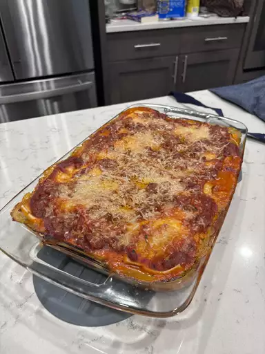

Lasagna

How to make Lasagna
Making lasagna can be time-consuming, but the results are well worth the wait. You'll find a detailed ingredient list and step-by-step instructions in the recipe below, but let's go over the basics:
ingredients
Meat:
This super meaty lasagna has sweet Italian sausage and lean ground beef.Onion and garlic:
onion and two cloves of garlic are cooked with the meat to add tons of flavor.Lasagna noodles:
Use store-bought
Steps
- Make the meat sauce.
-
- Cook the noodles.
- Make the ricotta mixture.
- Layer the lasagna according to the recipe instructions.
- Cover with foil and bake.
- Let the lasagna rest before serving.
back to index page